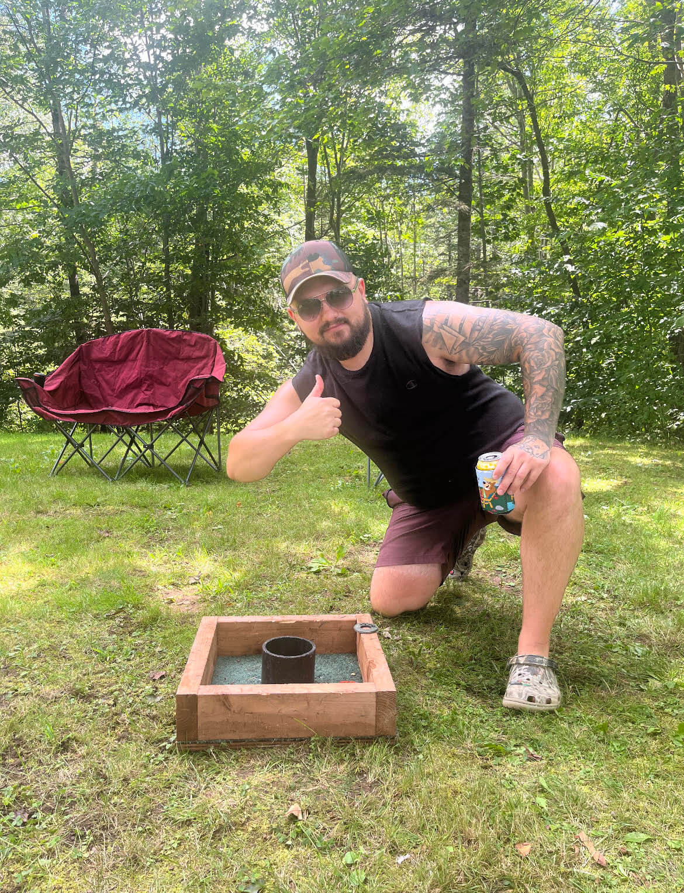

Cameron Otterson
cotty9696@gmail.com
902-324-0904
Truro, NS, Canada
Hey, my name is Cameron Otterson. I was born and grew up around the Truro Nova Scotia area. After I graduated high school I took a Diesel Repair course at NSCC in Bridgewater Nova Scotia. I continued through that career path for around 7 years but I'm now back at NSCC to start a new career path.
